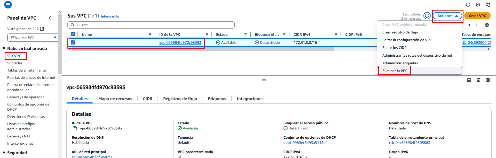
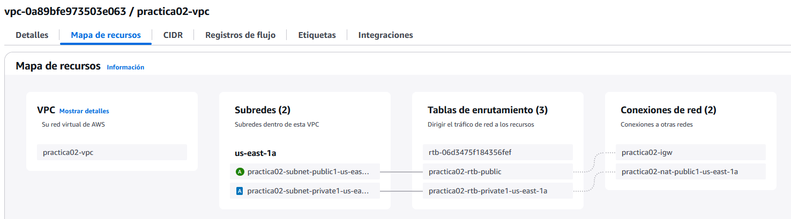
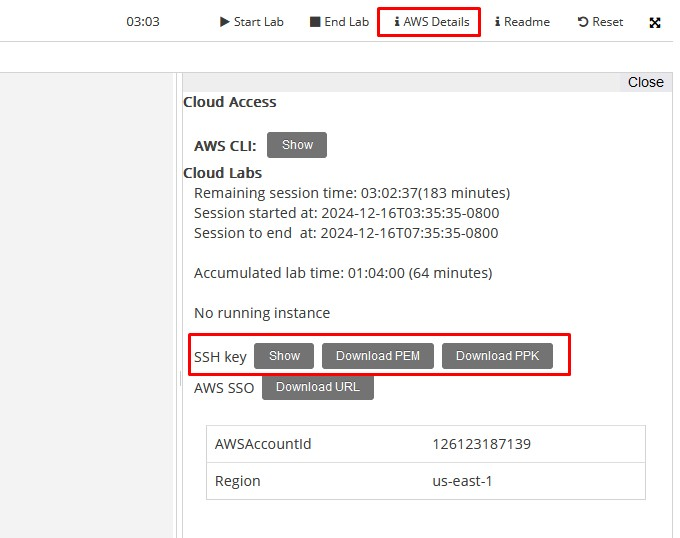

Redes Virtuales
Objetivo del Proyecto
En la práctica de creación de la Máquina Virtual hemos visto que al crear una máquina en AWS hemos utilizado una serie de recursos asociados a la red en la que se encuentra la máquina:
- La red virtual (VPC) de la infraestructura que estamos utilizando.
- La subred dentro de la VPC a la que está conectada la instancia.
- Un Internet Gateway.
- Una tabla de enrutamiento asociada a la subred.
- Un grupo de seguridad que ejerce de cortafuegos.
- Una dirección IP pública para conectarnos desde el exterior.
- Una IP elástica asociada a esa IP Pública para que sea siempre fija.
En esta práctica vamos a crear de manera manual todos estos recursos para poder configurarlos según nuestras necesidades. Vamos a implementar un esquema en el que tendremos una red virtual con dos subredes (subred-publica y subred-privada). En cada una de ellas crearemos una máquina virtual Ubuntu:
- La primera será accesible desde el exterior de la red (desde Internet) y para ello crearemos un grupo de seguridad en el que habilitaremos el puerto 22 (ssh) y el 80 (http) para que puedan entrar desde cualquier dirección. Además necesitaremos una IP Pública y un Internet Gateway que dará salida al exterior a todos los elementos de la subred.
- La segunda máquina estará en la subred-privada y configuraremos su grupo de seguridad para que sea accesible únicamente desde la subred-pública, sin acceso desde el exterior. Para que esta máquina tenga acceso a Internet (por ejemplo para poder hacer actualizaciones) pero no sea accesible desde Internet, necesitaremos un NAT-Gateway que se ubicará en la subred-pública
Esquema en AWS

Práctica a Realizar
Eliminación de la VPC por defecto
Comenzamos por eliminar la VPC creada por defecto junto con todos sus recursos asociados.
1.- Accedemos al panel VPC y eliminamos la VPC. Nos informa que se eliminarán 8 recursos asociados:
- Las 6 subredes públicas
- El Internet Gateway
- El Grupo de Seguridad

Creación de la nueva VPC
2.- Procedemos a crear la nueva VPC:
- Le decimos que queremos crear la VPC y más.
- Asignamos un nombre a la VPC, por ejemplo practica02
- Como dirección de red (Bloque de CIDR IPv4) dejamos la 10.0.0.0/16
- Seleccionamos una única zona de disponibilidad (AZ).
- Le decimos que nos cree una subred pública y otra privada.
- Personalizamos los bloques de direcciones de modo que las subredes tengan las siguientes direcciones:
- Subred pública: 10.0.1.0/24
- Subred privada: 10.0.2.0/24
- Como deseamos que la subred privada tenga salida a Internet, creamos un Gateway NAT en 1 AZ (ojo, esto nos incrementará el coste considerablemente).
- No vamos a conectar ningún bucket de S3, por tanto no seleccionamos ningún Gateway de S3 en el apartado de Puntos de enlace de la VPC.

Comprobación de los recursos creados
3.- Comprobamos los recursos creados:
- La VPC (practica02-vpc).
- Las 2 subredes (practica02-subnet-public1 y practica02-subnet-private1).
- El Internet Gateway (practica02-igw).
- Las 2 tablas de enrutamiento (una por cada subred: practica02-rtb-public y practica02-rtb-private).
- Una tabla de enrutamiento por defecto.
- Un Grupo de Seguridad por defecto.
- El NAT Gateway (practica02-nat-public1) ubicado en la subred pública para dar salida a Internet en la subred privada.
- Una IP Elástica asociada al NAT Gateway (practica02-eip).
Tablas de enrutamiento
Al crearse la VPC se han creado 3 tablas de enrutamiento: una por defecto y dos asociadas a las 2 subredes que hemos creado. Las 2 tablas asociadas a las nuevas subredes son las siguientes:
Tabla de entutamiento de la subred privada
Uso Típico
Subred privada que aloja recursos como:
- Bases de datos, servidores de aplicaciones o backend.
- Instancias que requieren acceso saliente a Internet (actualizaciones, APIs externas), pero que no deben recibir tráfico entrante directamente desde Internet.
| Destino | Objetivo |
|---|---|
| 10.0.0.0 /16 | local |
| 0.0.0.0 /16 | nat-gateway |
Interpretación:
- 10.0.0.0/16 -> local: Permite que todos los recursos dentro de la VPC con dirección en el rango 10.0.0.0/16 se comuniquen entre sí sin salir de la red privada.
- 0.0.0.0/0 -> NAT-Gateway: Redirige el tráfico saliente destinado a Internet al NAT Gateway que se encuentra en la subred pública. El NAT Gateway permite que las instancias en la subred privada se comuniquen con Internet sin ser directamente accesibles desde él.
Tabla de entutamiento de la subred pública
Uso Típico
Subred pública que aloja recursos como:
- Servidores web o aplicaciones que necesitan acceso desde Internet.
- Instancias EC2 con direcciones IP públicas.
| Destino | Objetivo |
|---|---|
| 10.0.0.0 /16 | local |
| 0.0.0.0 /16 | Internet-gateway |
Interpretación:
- 10.0.0.0/16 -> local: Igual que en la tabla privada, permite la comunicación entre recursos dentro de la VPC sin salir de la red.
- 0.0.0.0/0 -> Internet-Gateway: Define que todo el tráfico destinado a Internet (es decir, fuera del rango 10.0.0.0/16) sea redirigido al Internet Gateway. Este es el componente clave que convierte esta subred en una subred pública.
Creación de una instancia EC2 en la subred pública
Vamos a crear una máquina Ubuntu en la subred pública a la cual nos podremos conectar desde Internet.
4.- Accedemos al panel de EC2 y lanzamos una instancia.
- La nombramos ub01
- La imagen será una AMI de Ubuntu 24.04 LTS.
- En tipo de instancia seleccionamos una t2.micro (1 CPU y 1GB de RAM) incluida en la capa gratuita.
- Seleccionamos el par de claves vockey proporcionadas por el laboratorio.
- Editamos la configuración de red.
- Incluimos la máquina en la subred pública creada.
- Habilitamos la asignación de una IP Pública.
- Creamos un grupo de seguridad (reglas de firewall) nuevo y lo llamamos acceso-publico y le ponemos una descripción (acceso ssh a subred publica)
- Como regla de entrada dejamos la que viene por defecto que habilita el puerto 22 (SSH) desde cualquier lugar de Internet (0.0.0.0/0)
- Dejamos las opciones de almacenamiento que nos propone por defecto: 8GiB en un disco SSD de uso general.
- Lanzamos la instancia.
Nota
Hay que tener en cuenta que la dirección IP asignada será dinámica, por lo que si deseáramos que nuestra máquina fuera, por ejemplo, un servidor web, habría que asociarle una IP elástica, que equivale a asignarle una IP pública estática.
Conexión mediante SSH
Al crear la instancia no nos ha preguntado por ningún usuario ni contraseña en el sistema operativo. AWS crea unos usuarios por defecto que varían dependiendo del tipo de AMI seleccionada. Se pueden consultar aquí.
Para conectarnos a la máquina mediante ssh lo debemos hacer con un par de claves. En nuestro caso le hemos indicado que utilizaríamos las del laboratorio (vockey), por tanto el primer es descargarnos el fichero de la clave.
5.- Accedemos a la consola de lanzamiento del laboratorio y en Detalles pulsamos sobre la descarga del fichero PEM.

6.- Una vez descargado el fichero de clave debemos cambiar los permisos de dicho archivo:
- En Linux:
chmod 400 labuser.pem - En Windows: Dejamos únicamente los permisos para nuestro usuario, eliminando los accesos del resto de usuarios.
7.- Lanzamos el ssh indicando el fichero de la clave privada descargada y sustituyendo por la url correspondiente:
ssh -i "labuser.pem" ubuntu@ec2-204-236-197-47.compute-1.amazonaws.com
Instalación de un servidor web
Una vez dentro de la máquina vamos a instalar un servidor web.
8.- Ejecutamos:
sudo apt update
sudo apt install apache2 -y
Acceso a la página web
9.- Una vez instalado el servidor Apache, accedemos desde el navegador de nuestra máquina local a la dirección IP Pública de nuestra máquina AWS.
A pesar de tener instalado y corriendo el servidor web, el navegador no es capaz de resolver la dirección puesto que en el firewall de la instancia (grupo de seguridad acceso-publico) sólo hemos permitido conexiones desde el puerto 22.
Vamos a permitir conexiones también del puerto 80 (http) añadiendo una nueva regla de entrada en el grupo de seguridad acceso-publico.
10.- En la consola de AWS, dentro del panel de VPC, accedemos al grupo de seguridad acceso-publico para editar sus propiedades:
- En las Reglas de entrada añadimos una del tipo HTTP (Puerto TCP 80) para permitir accesos desde cualquier dirección (0.0.0.0/0).
11.- Guardamos las reglas y ya podemos acceder desde el navegador a la página por defecto del servidor Apache instalado en nuestra máquina.
Creación de una instancia EC2 en la subred privada
Vamos a crear una máquina Ubuntu en la subred privada a la cual NO nos podremos conectar desde Internet.
12.- Accedemos al panel de EC2 y lanzamos una instancia.
- La nombramos ub02
- La imagen será una AMI de Ubuntu 24.04 LTS.
- En tipo de instancia seleccionamos una t2.micro (1 CPU y 1GB de RAM) incluida en la capa gratuita.
- Seleccionamos el par de claves vockey proporcionadas por el laboratorio.
- Editamos la configuración de red.
- Incluimos la máquina en la subred privada creada.
- NO habilitamos la asignación de una IP Pública.
- Creamos un grupo de seguridad (reglas de firewall) nuevo y lo llamamos acceso-privado y le ponemos una descripción (acceso ssh a subred privada)
- Como regla de entrada dejamos la que viene por defecto que habilita el puerto 22 (SSH) desde tipo de origen Personalizado, y como origen seleccionamos el grupo de seguridad acceso-publico
- Dejamos las opciones de almacenamiento que nos propone por defecto: 8GiB en un disco SSD de uso general.
- Lanzamos la instancia.
Nota
En el grupo de seguridad asociado a esta instancia hemos dicho que sólo se pueden admitir conexiones por ssh provenientes del grupo de seguridad acceso-publico, de modo que para poder conectarnos a la máquina ub02 únicamente podremos hacerlo desde la máquina ubu01.
Conexión mediante SSH
La máquina ubu02 no tiene dirección pública, y además, aunque la tuviera, el grupo de seguridad solamente admite conexiones desde la subred pública, y no desde Internet. Por todo ello, si deseamos conectarnos a esta máquina, el único modo es hacerlo desde la máquina ub01. Para ello necesitamos 2 requisitos:
- Averiguar la IP de la máquina (Sabemos que al estar en la subred privada estará en el rango de direcciones 10.0.2.0/24)
- Pasar la clave privada (labuser.pem) que descargamos en nuestra máquina local a la máquina ub01, pues nos hará falta para conectarnos a ub02.
13.- Comenzamos accediendo desde el panel de EC2 a los detalles de la instancia ub02 copiamos la dirección IP privada.
14.- En segundo lugar, desde nuestra máquina host (y con la conexión ssh cerrada) copiamos el archivo labuser.pem a la máquina ubu01 mediante el comando scp:
scp -i labsuser.pem labsuser.pem ubuntu@ec2-18-212-203-120.compute-1.amazonaws.com:/home/ubuntu/clave_privada
15.- Iniciamos sesión en ub01:
ssh -i "labuser.pem" ubuntu@ec2-204-236-197-47.compute-1.amazonaws.com
16.- Comprobamos con un ls que se ha copiado el fichero y cambiamos los permisos:
ls -l
chmod 400 clave_privada
ssh -i clave_privada ubuntu@10.0.2.112
18.- Comprobamos que tenemos conexión de salida a Internet gracias al NAT Gateway:
sudo apt update
Eliminación del NAT Gateaway
19.- Accedemos a la consola de VPC y en Gateways NAT eliminamos el gateway (practica02-nat-public1) que creamos al crear la VPC.
20.- Intenta en ubu02 acceder a Internet, por ejemplo actualizando los repositorios:
sudo apt update
Ya hemos perdido la conexión a Internet.
Eliminación de recursos
21.- Una vez finalizada la práctica hay que eliminar los recursos creados para que no nos consuman crédito:
- Comenzamos liberando la IP elástica que se asoció al NAT Gateway. Accedemos a la consola de EC2 y en IP Elásticas seleccionamos la opción Publicar dirección IP elástica. (Publicar = hacer pública = disponible).
- Terminamos las instancias. En el panel de EC2, con la instancia seleccionada, pulsamos sobre la Acción Terminar (eliminar) instancia. Nos informa que el volumen EBS asociado también se eliminará.
- Por último, esperamos unos minutos a que se acaben de terminar la instancias y eliminamos los grupos de seguridad acceso-publico y acceso-privado, comenzando por este último.
Recuerda finalizar el laboratorio.